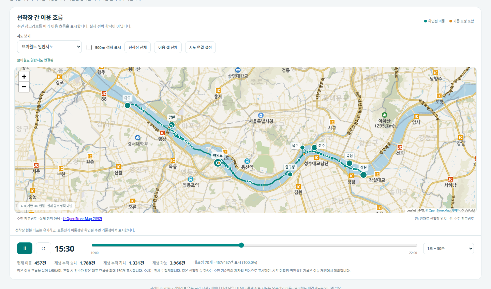
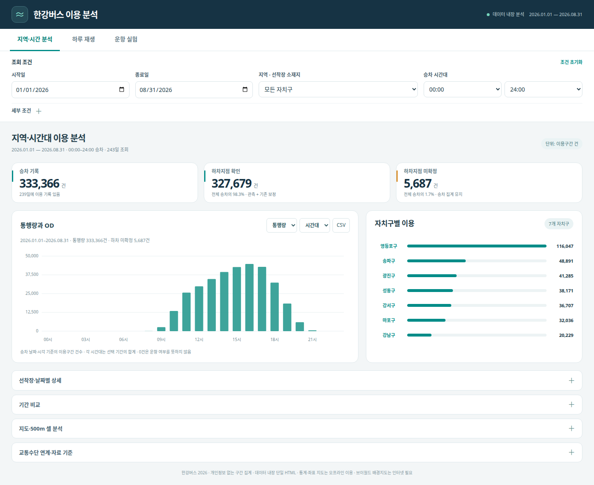

I · 교통·공간 분석연구 03 / 13 · 회사 업무 · 교통카드·공간 분석
한강버스 이용 흐름 분석
초록
2026년 1~8월 한강버스 이용구간을 정류장·노선 기준정보와 결합해 OD·시간대·연계수단·공간 분포를 분석했다. 기존 보정 이력을 유지하고 추가 학습 추정값을 제외한 뒤, 하차 미확정도 별도 범주로 남겨 전체 333,366개 이용구간을 보존했다. 같은 집계 기준으로 탐색형 HTML과 Excel 11시트·CSV 10종을 제작했다. 이용 흐름 재생은 실제 선박 항적과 구분했다.
주요어 교통카드 · OD · 결측 처리 · 500m 격자 · 이용 흐름
01연구 문제와 범위
원문 대조 · 발표자료·보고서·현재 산출물의 해당 부분 확인
연구·개발 목적
한강버스 교통카드 이용구간을 기간·시간대·선착장·OD와 전후 교통수단으로 분석하고, 같은 집계 기준의 탐색 화면과 공유 분석자료로 제공한다. 결측 처리는 분석 목적을 뒷받침하는 자료 품질 관리 절차다. [1] [2]
이 사례에서 다루는 문제
한강버스의 날짜·시간대·선착장별 이용량과 OD, 이용 전후 교통수단 및 접근·연계 지역은 어떻게 나타나는가?
문서에 기재된 목적과 수행 내용을 바탕으로 질문을 요약했습니다. 원문의 직접 인용은 아닙니다.
| 구분 | 내용과 근거 |
|---|---|
| 대상·기간 | 2026.01.01–08.31, 전체 선착장의 한강버스 이용구간. 합계 333,366건. [1] |
| 분석 단위 | 날짜·시간은 한강버스 승차 기준. 고유 인원이나 선박 운항 횟수가 아닌 이용구간 건수. [1] |
| 입력·보정 | 교통카드·노선·정류장 기준정보를 결합. 기존 보정은 유지하고 추가 학습 추정값은 제외; 하차 확인 327,679건·미확정 5,687건. [1] |
| 공간·연계 | 자체 500m 격자 2,054개. 동일 카드의 인접 구간으로 전후 수단과 출발·도착 위치를 집계하며 실제 환승·거주지를 확정하지 않는다. [1] |
| 산출물·재생 | Excel 11시트, CSV 10종, GeoJSON, 탐색형 HTML. 하루 재생의 이동점은 이용 기록의 흐름이며 실제 선박 항적이 아니다. [1] [2] |
| 관측 공백 | 7월 15·18·19·23일은 자료 미확인. 0건 표기를 실제 운휴·수요 0으로 해석하지 않는다. [1] |
02데이터와 분석 단위
| 자료·기준 | 내용과 분석 범위 |
|---|---|
| 기간·단위 | 2026.01.01–08.31의 243일 범위. 단위는 한강버스를 이용한 구간 건수이며 고유 이용자 수나 운항 횟수가 아님 |
| OD | 날짜·승차시간대·출발지·도착지·통행량의 5열 기준표에서 일간·주간·월간·시간대 표 생성 |
| 연계수단 | 동일 카드의 인접 이용구간으로 전후 수단 분석. 실제 환승 여부를 확정하지 않음 |
| 격자 | 분석용 자체 500m 격자 2,054개. 원본 좌표계 명세 미확보로 경위도를 EPSG:4326으로 해석하고 EPSG:5179에서 작성 |
자료의 근거
PC 최종 공유 자료의 사용안내와 집계값, 서버의 2026.10.06·10.12 검증 기록을 대조했습니다. 개별 카드·거래 기록은 게시하지 않습니다.
03분석·개발 방법
- 01기준정보·보정 이력 확인
- 02하차 미확정 별도 분류
- 03OD·시간·연계·격자 집계
- 04HTML·Excel·CSV 합계 대조
기존 보정은 유지하고 추가 학습 추정값은 분석 기준에서 제외했습니다. 미확정 OD를 별도 범주로 남기고 모든 출력이 같은 이용구간 합계를 따르도록 했습니다.
기준정보와 보정 기준 정리
정류장·노선 정보를 결합하고 기존 보정 유지본과 추가 추정본의 역할을 구분했습니다.
미확정 범주 보존
하차지점이 확인된 327,679건과 미확정 5,687건을 분리하되 총 333,366건을 유지했습니다.
보고용 집계 통일
같은 표시명의 수단을 합치고 원기록에서 간격 가중중앙값을 다시 계산했습니다. 하차 누락 때문에 오해할 수 있는 순유입 차이 열을 제외했습니다.
화면과 공유 자료 연결
HTML에서 기간·지역을 선택하고, 전체 기간 기준의 Excel 11시트·CSV 10종·격자 파일을 동일 기준으로 재생성하도록 구성했습니다.
04결과와 검증
| 평가·결과 항목 | 확인한 값·산출물 | 조건과 해석 범위 |
|---|---|---|
| 전체 이용구간 | 333,366건 | 고유 이용자 수·운항 횟수와 다른 분석 단위. |
| 하차지점 확인 / 미확정 | 327,679건 / 5,687건 | 미확정을 제거하거나 임의 추정하지 않고 전체 합계에 보존. |
| 공유 산출물 | Excel 11시트 · CSV 10종 | 화면 다운로드와 동일 집계 기준. |
| 분석용 500m 격자 | 2,054개 | 자체 분석 격자이며 공식 인구격자·실제 접근권과 구분. |
기간·시간대별 흐름을 탐색하는 HTML과 재분석 가능한 Excel·CSV·GeoJSON 묶음을 제작했습니다. 보고용 표와 화면 다운로드의 집계 기준을 통일했습니다.
검증 조건과 관측 결과
- 327,679 + 5,687 = 333,366으로 이용구간 총합을 대조했습니다. 미확정 도착지를 제거한 합계와 전체 합계를 구분했습니다.
- 2026.10.06 기록: 독립 패키지 검사 62개와 실제 브라우저 CSV 검사 37개 통과. Excel 표, OD 주변합, 격자 형상·연결 ID, ZIP 구성을 확인했습니다.
- 2026.10.12 공통 실행기에서 승인된 기간의 CSV 10개·Excel 11시트를 재생성했습니다. 원본 DAT·Parquet과 기존 보정 이력은 보존했습니다.
05시각화와 산출물
기간·시간대·선착장·OD를 선택하는 분석 화면과 하루 이용 흐름 재생을 구현했다. 집계 막대와 지도를 같은 필터에 연결하고 미확정 하차를 별도 표시했다. 아래 영상은 8월 23일의 이용 기록을 시간순으로 재생한 화면이다.
점은 수로 참고 경로 위에 배치한 이용 흐름이다. 실제 선박 GPS가 아니며, 자료가 없는 4일의 0을 운휴·수요 0으로 해석하지 않는다.
직접 실행한 화면과 영상
2026년 8월 23일 이용 기록을 10시부터 22시까지 재생한 실제 실행 화면입니다. 시간에 따라 움직이는 이용 흐름과 누적 도착 현황을 볼 수 있습니다.
한강버스 · 하루 이용 흐름

점의 이동은 이용 기록을 수로 참고 경로에 배치한 재생이며 실제 선박의 GPS 항적이 아닙니다. 해당 날짜 4,019개 이용구간 중 하차 확인 3,971건·미확정 48건이며, 시간 재생 조건을 충족한 3,966건을 표시합니다.

화면 캡처·녹화: 2026.10.22 · 영상은 재생 버튼으로 시작하며 전체 화면으로 확대할 수 있습니다.
OBSERVED SEGMENTS / 2026.01–08
미확정 하차도 전체 합계에 남겼습니다
| 구분 | 이용구간 | 해석 |
|---|---|---|
| 하차지점 확인 | 327,679건 | 확인된 OD 집계 |
| 하차 미확정 | 5,687건 | 출발지와 전체 합계에 보존 |
| 전체 | 333,366건 | 고유 인원·운항 횟수와 구분 |
미확정은 약 1.71%입니다. 추가 학습 추정값으로 채우지 않았습니다. 관측 자료가 없는 4일의 0도 실제 수요 0과 구분했습니다.
06논의와 한계
6.1 결과를 읽는 기준
점은 수로 참고 경로 위에 배치한 이용 흐름이다. 실제 선박 GPS가 아니며, 자료가 없는 4일의 0을 운휴·수요 0으로 해석하지 않는다.
6.2 적용 범위와 한계
7월 15·18·19·23일은 자료 미확인입니다. 표의 0을 실제 운휴나 이용 0으로 해석하지 않습니다.
선착장 소재 자치구는 이용자의 거주지가 아닙니다. 전후 연계와 승하차 지표를 서로 더하지 않습니다.
500m 격자는 공식 인구격자가 아니며, 실제 보행 접근권이나 교통 사각지대를 확정하지 않습니다. 좌표 미확인 기록을 임의의 셀에 배분하지 않았습니다.
07근거 자료와 재현
목적·범위의 원문 근거
PPT는 파일의 슬라이드 순번, PDF는 표지를 포함한 파일 쪽수입니다. 비공개 원문은 제목·위치·확인 내용만 표기했습니다.
- 한강버스 공유 분석자료 — 먼저읽기2026.01.01–08.31 묶음 · 1–3절 · 최종 자료 사용안내
분석 목적, 기간·집계 단위, 이용구간 총합, 미확인 날짜와 500m 격자 해석.
- 한강버스 이용흐름 분석·운항 계획 실험 — 사용안내2026.10.06 정리 · 빠르게 사용하기·날짜별 흐름 재생 · 실행형 HTML 사용안내
지역·시간 분석, 하루 재생 및 별도 운항 실험의 조건을 분리.
이 글은 확인된 작업 기록과 산출물을 바탕으로 정리했다. 자료 기간·실험 조건·평가 대상이 다른 기록은 각각의 범위를 표시했다. 과거 요약 PDF보다 최신 웹 본문의 수행 범위와 조건을 우선해 읽는다.
PC 최종 공유 자료의 사용안내와 집계값, 서버의 2026.10.06·10.12 검증 기록을 대조했습니다. 개별 카드·거래 기록은 게시하지 않습니다.
수치는 표시된 수행일·자료기간·실행 조건에 한정한다. 공개 집계·비교 조건과 재현 가능한 공개 자료를 아래에서 확인할 수 있다.